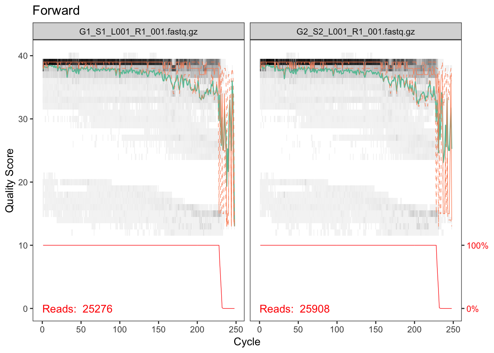
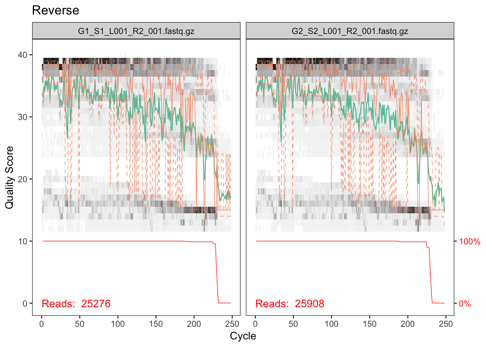
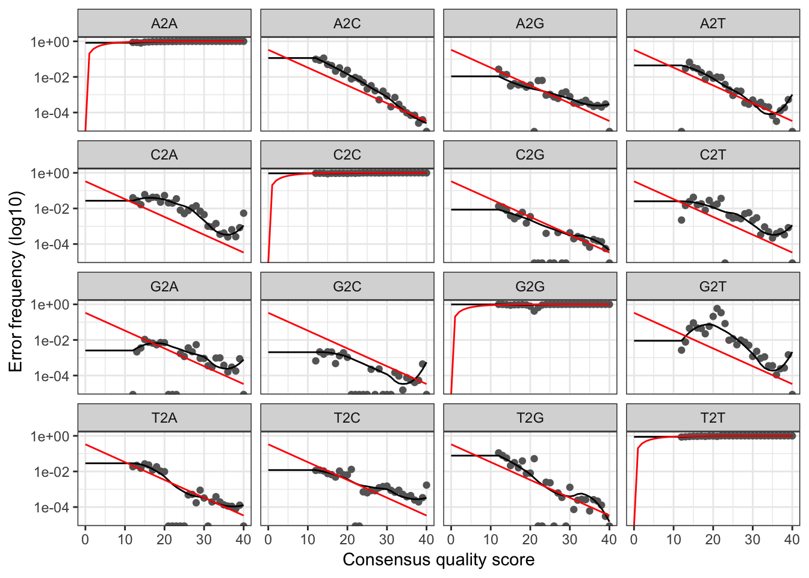

Once you have generated the data from the MiSeq you must complete the following steps in order to analyze the data.
Preparing files for analysis
Downloading sequencing data files from BaseSpace
To download the sequencing fields from BaseSpace. Go to https://basespace.illumina.com/home/index, log-in, and navigate to your sequencing run. Click “Download” and select “All FASTQ files for this run”. Then click “Download your files”. BaseSpace uses the “BaseSpace Downloader” to download your files. If you have not previously downloaded this program, you must download it at this time. Select the location to download your files.
Once your files have downloaded, navigate to the folder where the files were downloaded. There will be one folder that corresponds to each sample that was sequenced. In each of these folders there will be two files, one that corresponds to the forward reads, and one that corresponds to the reverse reads. The forward and reverse read files for all samples will need to be moved to a single folder for analysis to conduct the analysis.
Recommendation
Create a folder on your home directory with the name of your sequencing run (for the rest of this example it will be called “MiSeq_Run”). Move all of your files into this folder.
Once the files have been moved, the files must be unzipped/uncompressed. This can be done with the Archive Utility on a Mac and any file compression software, such as WinZip, on a PC. Make sure you unzip your files into the folder that you have created (i.e. “Miseq_Run”)
Create sample list
You will need to create a file that contains the name of your sample, and specifies which files correspond to this sample. This will tell the program which files to analyze for each particular sample. You can download the file “nemabiome.files” in the Examples section for an example of what this file must look like. Each line in this file represents a single sample that must be analyzed. The first column is the sample name, the second column is the file name for the forward read file, and the third column is the name of the reverse read file. Each column is separated by a single tab. An example is also listed below.
Example:
sample1 sample1_S1_L001_R1_001.fastq sample1_S1_L001_R2_001.fastq
sample2 sample2_S2_L001_R1_001.fastq sample2_S2_L001_R2_001.fastq
sample3 sample3_S3_L001_R1_001.fastq sample3_S3_L001_R2_001.fastq
...
Sample names may vary between different Illumina platforms, so please check the names of your downloaded files, to ensure the file names are correct. Please name this file as “stability.files”, with the “.files” file extension. Place this file in your folder that you created for analysis. This is the only file that you will need to create from scratch for this analysis, if you use the provided files.
Download analysis files
Download the analysis files Nematode ITS2 database version 1.3, Nematode taxonomy file (version 1.3) and Mothur batch file. Place these files in the folder that contains your sequencing data (i.e. ‘MiSeq_Run’)
For a standard application do not make any changes to these files. If you are aware of the number of processors that your computer has, open up the batchfile.txt file, go to the first line and change the parameter “processors” from “processors=2” to the number of processors in your computer.
Running analysis
Once all files have been downloaded, open up Terminal or Command Prompt. You will then need to navigate to the folder you created, which can be done using the “cd” command. If you created your analysis folder in your home directory type:
cd MiSeq_Run
This will change to this folder.
Then type:
~/mothur/mothur batchfile.txt
(On a Mac)
OR
C:\mothur\mothur.exe C:\MiSeq_Run\batchfile.txt
(On a PC)
This will launch Mothur, and begin to complete the commands that are contained within the batchfile. You will need to leave your computer open and running while the analysis completes. The amount of time that it will take to run will vary with your computer, and the number of samples/reads that you will be analyzing. General run times will probably be around ~4 hours, on a standard computer, 96 samples with an average read depth of ~50,000 reads.
Once the analysis has completed, you will have a file called nemabiome_results.summary. You can open this file up and copy the contents into an Excel workbook to properly view the data.
DADA2 Example Workflow
Preamble
The DADA2 pipeline is used as a method to correct errors that are introduced into sequencing data during amplicon sequencing. The output of this pipeline is a table of amplicon sequence variants (ASVs), as opposed to the traditional OTUs seen in other amplicon sequencing workflows that cluster similar sequences into a single OTU. DADA2 is capable of resolving biological differences of 1 or 2 nucleotides, producing ASVs from amplicon data that are of higher resolution than OTUs.
Requirements & Installations
DADA2 is an open-source R package that will allow you to run through the entire pipeline, including steps to filter, dereplicate, identify chimeras, and merge paired-end reads.
To use DADA2, you must download and install R for your operating system. This can be done here. You should use the latest version of R/
If you would like, download and install RStudio, which is an integrated development environment (IDE) for R programming. This can be done through this link.
Since DADA2 is available as part of the Bioconductor Project Package Repository, install Bioconductor in R.
install.packages("BiocManager")
To install the latest version of the DADA2 package (1.12.1), type the following:
BiocManager::install("dada2", version = "3.9")
If you have previously installed R and Bioconductor, you may need to update them to the most recent versions.
To use the DADA2 pipeline, primers must be removed from the amplicon sequence data. In the following tutorial, we will be using the cutadapt tool in R to do this. Cutadapt can be installed as a conda package. If you do not already have conda installed, you can do so here. Once you have conda installed, go to Terminal or Command Prompt, and type the following:
conda install -c bioconda cutadapt
DADA2 Workflow
Once you have installed the above, you are ready to start using the DADA2 pipeline. The following is a sample analysis using the DADA2 pipeline (https://benjjneb.github.io/dada2/tutorial.html). This is meant to be an example and not a definitive workflow. First, we load packages and set a seed for reproducibility.
library(DECIPHER)
packageVersion("DECIPHER")
## [1] '2.12.0'
library(dada2)
packageVersion("dada2")
## [1] '1.12.1'
library(ShortRead)
packageVersion("ShortRead")
## [1] '1.42.0'
library(Biostrings)
packageVersion("Biostrings")
## [1] '2.52.0'
library(ggplot2)
packageVersion("ggplot2")
## [1] '3.1.1'
library(stringr) # not strictly required but handy
packageVersion("stringr")
## [1] '1.4.0'
set.seed(106)
Setup
To get started we’ll need to do a little prep. We’ll start by defining the path of sequences to be processed (using “~/Miseq_Run” from previous examples). The DADA2 pipeline is intended to be used with demultiplexed, paired-end fastq files. That is to say, the samples must be separated into individual files and ordered such that forward and reverse reads of the same sample are matched. The pattern of the filenames should be the same for all forward and reverse files. In this example, the names are formatted as such: samplename_R1_001.fastq.fz for forward reads and samplename_R2_001.fastq.gz for reverse reads.
We then create a vector of file names, one for the forward reads and one for the reverse. The samples vector contains our sample names, extracted from the file names using a regular expression. For Illumina data, often the sample name is everything before the first underscore.
The primer sequences are defined here as well, because we’ll be clipping those off shortly. The forward primer will be at the beginning of the forward read and the reverse primer will be at the beginning of the reverse read. The reverse complements are included in case the amplicon sequence is shorter than our read length. When this happens the sequence will contain the reverse complement of the opposite primer, i.e. there may be reverse-complemented reverse primer at the end of the forward read.
path <- "~/MiSeq_Run"
fwd_files <- sort(list.files(path, pattern = "R1", full.names = TRUE))
rev_files <- sort(list.files(path, pattern = "R2", full.names = TRUE))
# It's also handy to have a vector of sample names, which in this case is everything up
# until the first underscore, which is what our regular expression caputres. You may
# also create this manually if you don't have too many samples
samples = str_extract(basename(fwd_files), "^[^_]+")
names(fwd_files) <- samples
names(rev_files) <- samples
fwd_primer <- "ACGTCTGGTTCAGGGTTGTT"
rev_primer <- "TTAGTTTCTTTTCCTCCGCT"
fwd_primer_rev <- as.character(reverseComplement(DNAStringSet(fwd_primer)))
rev_primer_rev <- as.character(reverseComplement(DNAStringSet(rev_primer)))
Before we move on let’s do a quick sanity check to make sure our primer sequences are detected. The code below will count the number of times we have a primer hit in our fastq file. Note that this is a quick and dirty method to be sure that we have the right primer sequence. For proper primer removal we’ll need something more sophisticated, like cutadapt which we’ll demonstrate next.
# This function counts number of reads in which the primer is found
count_primers <- function(primer, filename) {
num_hits <- vcountPattern(primer, sread(readFastq(filename)), fixed = FALSE)
return(sum(num_hits > 0))
}
count_primers(fwd_primer, fwd_files[[1]])
## [1] 25357
count_primers(rev_primer, rev_files[[1]])
## [1] 21503
Primer removal
Now we can use cutadapt to remove primers, and check that they have been successfully removed. Cutadapt was designed to remove sequencing adapters that sometimes get left on the reads, however, it’s main function is to detect and trim off regions that match a known sequence, which is precisely what we want to do here.
Cutadapt is best installed using conda (conda install cutadapt) and can also be used directly from the command line. Here we demonstrate how to run it directly from R using the system2 command but the results are the same either way. The first parameter to system2 is the program we wish to run and the second is character vector of arguments and their values.
# CHANGE ME to the cutadapt path on your machine. If you've installed conda according to the
# provided instructions then this will likely be the same for you.
cutadapt <- path.expand("~/miniconda3/bin/cutadapt")
# Make sure it works
system2(cutadapt, args = "--version")
Now output filenames are defined as well as parameters for cutadapt. The critical parameters are the primer sequences and their orientation. It’s strongly recommended that you review the [cutadapt documentation] (https://cutadapt.readthedocs.io/en/stable/guide.html) for full details of each parameter. Briefly:
-g: sequence to trim off the 5’ end of the forward read (forward primer) -a: sequence to trim off the 3’ end of the forward read (reverse complemented reverse primer) -G: sequence to trim off the 5’ end of the reverse read (reverse primer) -A: sequence to trim off the 3’ end of the reverse read (reverse complemented forward primer)
We’ll also add -m 50 to get rid of super short junky reads, --max-n 1 to get rid of reads that have any N’s in them and -n 2 so that cutadapt will remove multiple primer hits if there happens to be read-through. The --discard-untrimmed is also added so only reads that contain a primer will be kept ensuring we keep only valid amplicons. And finally a -q 15 will trim off low quality bases from the 3’ end.
In our experience this small amount of trimming can remove the need for truncating the reads later on but this is something that may vary from run to run it and an important paramter to consider for your own data
# Create an output directory to store the clipped files
cut_dir <- file.path(path, "cutadapt")
if (!dir.exists(cut_dir)) dir.create(cut_dir)
fwd_cut <- file.path(cut_dir, basename(fwd_files))
rev_cut <- file.path(cut_dir, basename(rev_files))
names(fwd_cut) <- samples
names(rev_cut) <- samples
# It's good practice to keep some log files so let's create some
# file names that we can use for those
cut_logs <- path.expand(file.path(cut_dir, paste0(samples, ".log")))
cutadapt_args <- c("-g", fwd_primer, "-a", rev_primer_rev,
"-G", rev_primer, "-A", fwd_primer_rev,
"-n", 2, "--discard-untrimmed")
# Loop over the list of files, running cutadapt on each file. If you don't have a vector of sample names or
# don't want to keep the log files you can set stdout = "" to output to the console or stdout = NULL to discard
for (i in seq_along(fwd_files)) {
system2(cutadapt,
args = c(cutadapt_args,
"-o", fwd_cut[i], "-p", rev_cut[i],
fwd_files[i], rev_files[i]),
stdout = cut_logs[i])
}
# quick check that we got something
head(list.files(cut_dir))
## [1] "G1_S1_L001_R1_001.fastq.gz" "G1_S1_L001_R2_001.fastq.gz"
## [3] "G1.log" "G2_S2_L001_R1_001.fastq.gz"
## [5] "G2_S2_L001_R2_001.fastq.gz" "G2.log"
Inspect quality scores
Now that primers are removed, we can begin the DADA2 pipeline in full. We start with plotting quality profiles of our sequences to determine suitable quality filtering parameters. For the sake of speed we only show 2 samples here but feel free to look at all your samples (or more than 2 anyway).
plotQualityProfile(fwd_cut[1:2]) + ggtitle("Forward")

Everything looks pretty good here. The majority of our reads should be 230 bp based on the fact that we trimmed 20 bp primers off the beginning of the read. It looks like a very, very few did not get trimmed properly but from the red line across the bottom, which is the number of reads of that length, we can see that this is such a small percentage that we don’t need to worry about it.
Side note
If you’re paying attention you might be asking why, if the primers always appear at the same point in the read, can’t we just clip the reads at this point. In fact, for some datasets, this one included, that would be a valid strategy given that the all the ITS2 sequences are longer than the read length (250 bp). However, this is not always the case and as described above, if the amplicon length is less than the read lenght we’ll have to find and remove the opposite primer. So in general it’s good practice to use something like cutadapt which will ensure the correct sequences are output.
plotQualityProfile(rev_cut[1:2]) + ggtitle("Reverse")

Reverse reads are lower quality as is always the case for Illumina data. However, it looks like the quality average is above 20 for most of the length of the read so we’ll go ahead with the analysis.
Quality filtering
For the purposes of our analysis, we chose to conduct quality filtering with maximum expected errors of 2 for the forward sequence, 5 for the reverse, to truncate after a quality score of 2 or lower.
Make your own decisions about trimming paramters! Your data will be different, possibly very different, from ours so our parmeter choices are likely to be not at all appropriate for your data. So don’t copy and paste this code - think carefully about your data and choose parameters appropriate for your data.
# Same as for the clippling we create an output directory to store the filtered files
filt_dir <- file.path(path, "filtered")
if (!dir.exists(filt_dir)) dir.create(filt_dir)
fwd_filt <- file.path(filt_dir, basename(fwd_files))
rev_filt <- file.path(filt_dir, basename(rev_files))
names(fwd_filt) <- samples
names(rev_filt) <- samples
filtered_out <- filterAndTrim(
fwd = fwd_cut,
filt = fwd_filt,
rev = rev_cut,
filt.rev = rev_filt,
maxEE = c(2, 5),
truncQ = 2,
rm.phix = TRUE,
compress = TRUE,
multithread = TRUE
)
head(filtered_out)
## reads.in reads.out
## G1_S1_L001_R1_001.fastq.gz 25276 24107
## G2_S2_L001_R1_001.fastq.gz 25908 24533
Main dada2 workflow
Much of the remainder of the dada2 workflow is very well documented in the main dada2 tutorial so if you’d like to read in more detail please that tutorial as well as the dada2 paper.
Learn errors
Here dada2 learns the error profile for your data using an interative approach. These error profiles are used in the next step to correct errors.
err_fwd <- learnErrors(fwd_filt, multithread = TRUE)
## 11162461 total bases in 48640 reads from 2 samples will be used for learning the error rates.
err_rev <- learnErrors(rev_filt, multithread = TRUE)
## 11118332 total bases in 48640 reads from 2 samples will be used for learning the error rates.
plotErrors(err_fwd, nominalQ = TRUE)
 The plot shows how well the estimated error rates fit the observed rates. The black line should line up reasonably well with the black points. This looks reasonable so we continue on.
Denoising (aka error-correcting)
We can now denoise our sequences using the DADA algorithm. Note that older versions of dada2 required a dereplication step that is now done automatically by the dada function.
dada_fwd <- dada(fwd_filt, err = err_fwd, multithread = TRUE)
## Sample 1 - 24107 reads in 4939 unique sequences.
## Sample 2 - 24533 reads in 5379 unique sequences.
dada_rev <- dada(rev_filt, err = err_rev, multithread = TRUE)
## Sample 1 - 24107 reads in 15358 unique sequences.
## Sample 2 - 24533 reads in 15463 unique sequences.
Merge pairs
Now that we have accurate sequences we can merge the paired-end reads to reconstruct the full amplicon sequence. Note that most sequences should succesfully overlap, unless your trimming parameters were too aggresive (i.e. too much sequence was trimmed off the end) or you have amplicons that longer than the combined read length (>500 bp, in this case). In the latter case these reads are still useable but will need special handling (more details to come on those cases).
mergers <- mergePairs(
dadaF = dada_fwd,
dadaR = dada_rev,
derepF = fwd_filt,
derepR = rev_filt,
maxMismatch = 1,
verbose=TRUE
)
Sequence table
Before we can assign taxonomy, we can construct a sequence table, which lists the number of each sequence present in each sample. We can see the dimensions of this sequence table, where the number of rows is the number of samples and the number of columns is the number of total unique sequences
seqtab <- makeSequenceTable(mergers)
dim(seqtab)
## [1] 2 55
Remove chimeras
Don’t be alarmed here if many of your sequences are discarded - the number of chimeras varies but can be quite high in some cases.
seqtab_nochim <- removeBimeraDenovo(seqtab, method = "consensus", multithread = TRUE, verbose = TRUE)
dim(seqtab_nochim)
## [1] 2 19
How did we do?
Sequence length distribution
table(nchar(getSequences(seqtab_nochim)))
##
## 273 274 281 283 287 288 289 291
## 2 2 2 2 2 1 1 7
Number of reads at each step
This is an important step, particularly if you’re trying to track down where something went wrong.
# small function to get the number of sequences
getN <- function(x) sum(getUniques(x))
track <- cbind(
filtered_out,
sapply(dada_fwd, getN),
sapply(dada_rev, getN),
sapply(mergers, getN),
rowSums(seqtab_nochim)
)
colnames(track) <- c("raw", "filtered", "denoised_fwd", "denoised_rev", "merged", "no_chim")
rownames(track) <- samples
head(track)
## raw filtered denoised_fwd denoised_rev merged no_chim
## G1 25276 24107 24071 21484 21286 20336
## G2 25908 24533 24479 21994 21684 19950
Assigning taxonomy with IDTAXA
Now that we have a sequence table with the chimeras removed, we can classify/assign taxonomy to the sequence variants. Although there are multiple multiple taxonomic classification methods, we will be using IdTaxa, which is available through the DECIPHER package. You can read more about IdTaxa here.
Training the classifier
The IdTaxa classification method relies on a training set that contains sequences that are representative of known taxa. Although there exists trained classifiers, we will be using the ITS2 Nematode database as our classifier. Since it is not trained, we will have to train the classifier using LearnTaxa, which is also available as a DECIPHER package. The train parameter of LearnTaxa contains the sequences included in the classifier as a DNAStringSet. Each sequence is formatted such that the names of each taxonomic level is separated by a semicolon. Once the sequence headers of the classifier are parsed, the taxonomy parameter will contain the taxonomic assignment, separated by a semicolon, for each sequence in train.
# Load the sequences (we use the rdp formatted database here - the IDTAXA formatted version will be forthcoming)
train <- readDNAStringSet("~/Nematode_ITS2_rdp_0.9.3.fasta")
# extract the sequence headers and remove everything up to and including the first space
# this is the format required by the classifier
taxonomy <- names(train)
taxonomy = str_remove(taxonomy, "^[\\S]+\\s")
# Train the classifier
trainingSet <- LearnTaxa(train, taxonomy)
## ===========================================================================
##
## Time difference of 11.07 secs
Running IdTaxa
To use IdTaxa, we will need to convert the unique sequence variants that we want to classify into a DNAStringSet object. Now that we have our trained classifier (i.e. training set) and the sequences we want to classify, we can run IdTaxa. You can change various parameters of IdTaxa depending on your data. We recommend reviewing the [IdTaxa documentation] (https://rdrr.io/bioc/DECIPHER/man/IdTaxa.html) for further information. Here, we have specified several parameters:
strand = "both" : by setting the strand parameter to “both”, each sequence variant is classified using both the forward and reverse complement orientation. The sequence varient will be classified as the result with the highest confidence.threshold = 60 : setting the threshold to 60 specifies when the taxonomic classifications are truncated. A lower threshold usually results in higher taxonomic level classifications, but lower accuracy (i.e. confidence). A higher threshold usually results in lower taxonomic level classifications, but with higher accuracy.bootstraps = 100 : this specifies the amount of times bootstrap replicates are performed for each sequence.processors = NULL : automatically uses all available processors.verbose = TRUE : displays progress.type = "extended" : by setting the type to “extended”, the output for each sequence variant will contain the taxonomic classification, the names of each taxonomic rank, and the confidence of the assignment.
dna <- DNAStringSet(getSequences(seqtab_nochim))
idtaxa <- IdTaxa(dna,
trainingSet,
strand = "both",
threshold = 60,
bootstraps = 100,
processors = NULL,
verbose = TRUE,
type = "extended")
## ===========================================================================
##
## Time difference of 0.62 secs
Although it contains all the necessary information, the output of IdTaxa is not as intuitive as we would like. It outputs a list of the sequence variants. Within this list, each element will have its taxonomic classification and the confidence for each taxon. To facilitate easier manipulation and comprehension of the data, we will convert this list into a matrix, with the rows as the sequence variants and the columns as their taxonomic classifications.
# These are the ranks in the Nematode ITS2 database
ranks <- c("superkingdom", "kingdom", "phylum", "class", "order", "family", "genus", "species")
# Extract the classification and remove the "Root" column
taxid <- t(sapply(idtaxa, function(x) x$taxon))[,-1]
# column bnames are the ranks, and rownames should match the column names of the sequence table
colnames(taxid) <- ranks
rownames(taxid) <- colnames(seqtab_nochim)
Over to phyloseq
library(phyloseq)
# This is just a placeholder - normally this would be a dataframe containing all your sample inforamtion,
# with rownames matching the sample names
samp_data <- data.frame(
row.names = samples,
sample = samples
)
# We need better tables for our sequences than the actual sequence which is the dada2 default
asvs <- paste0("ASV_", 1:length(dna))
rownames(taxid) <- asvs
colnames(seqtab_nochim) <- asvs
names(dna) <- asvs
# Now we put everything into one phyloseq object (even the sequences) so it is easy to use
physeq = phyloseq(
otu_table(seqtab_nochim, taxa_are_rows = FALSE),
tax_table(taxid),
sample_data(samp_data),
dna
)
physeq
## phyloseq-class experiment-level object
## otu_table() OTU Table: [ 19 taxa and 2 samples ]
## sample_data() Sample Data: [ 2 samples by 1 sample variables ]
## tax_table() Taxonomy Table: [ 19 taxa by 8 taxonomic ranks ]
## refseq() DNAStringSet: [ 19 reference sequences ]